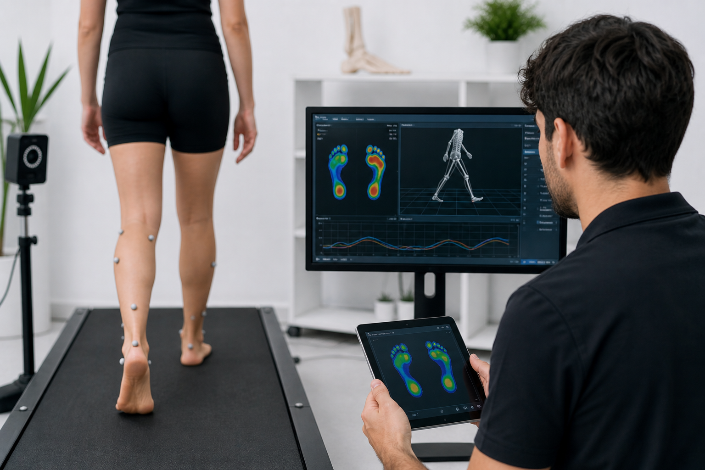
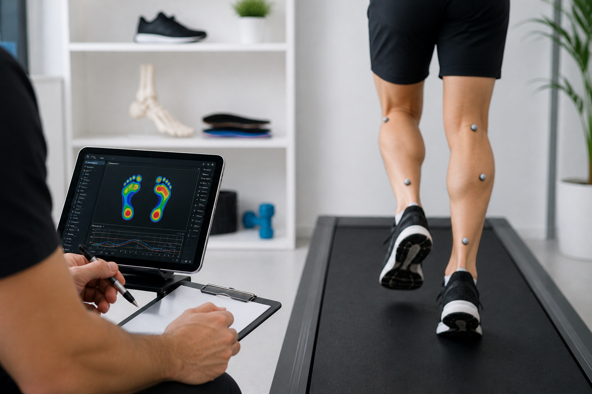
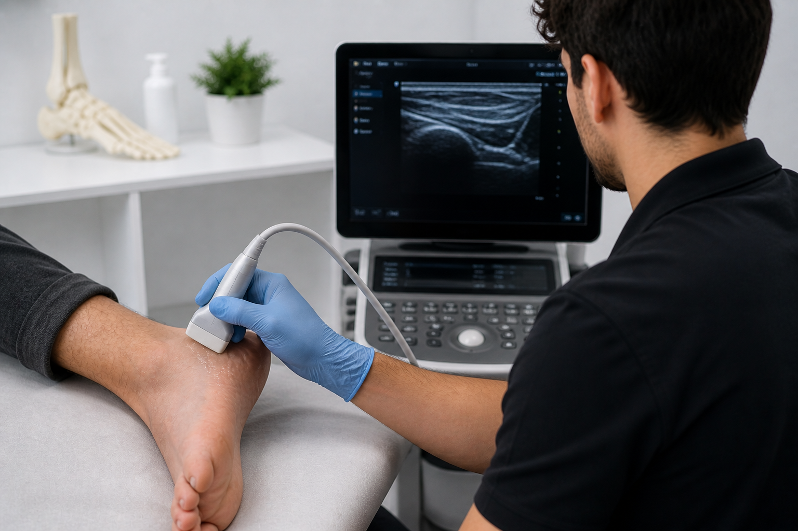
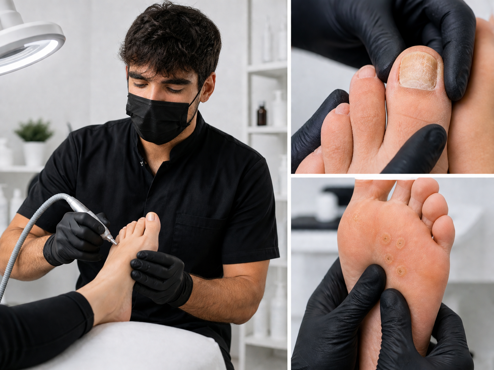
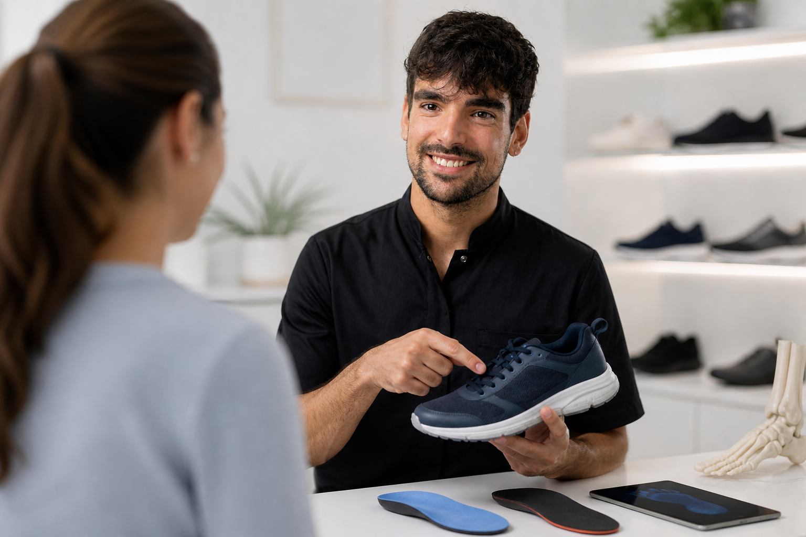
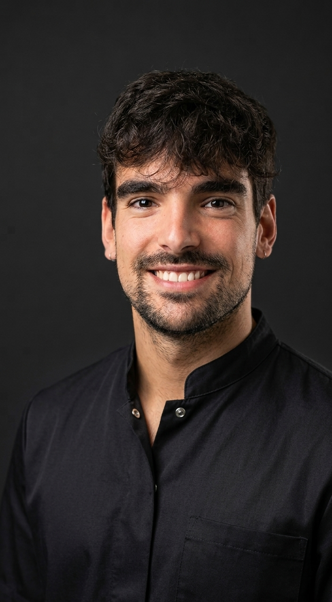
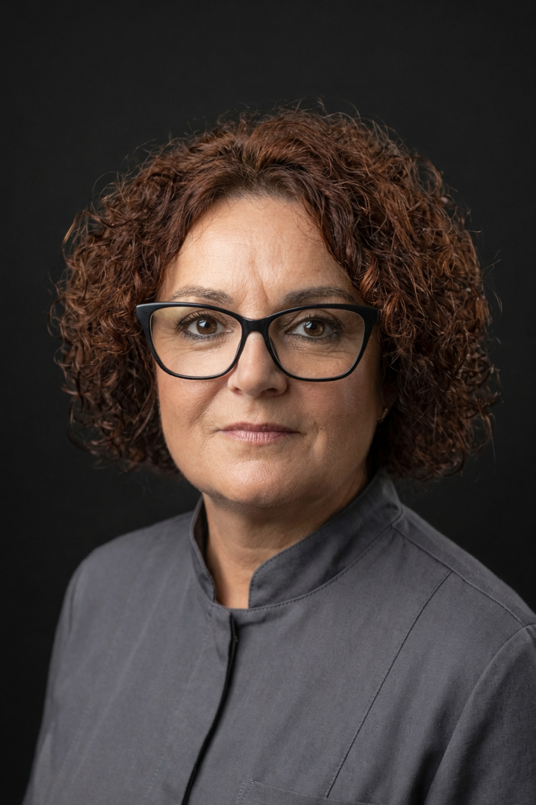

Hay dolores
que se aprenden
a ignorar.
No deberías acostumbrarte al dolor. Y no tienes que hacerlo. Si algo duele al caminar, normalmente hay una causa. Y en la mayoría de los casos, tiene solución.
"No somos ninguna franquicia. No somos una clínica de paso. Somos un proyecto de barrio — y lo tratamos como tal."
Más de 40 años en Repelega · Cuarta generación
El callo que duele pero "tampoco es para tanto". La uña que lleva meses molestando. Poco a poco te acostumbras. Pero no deberías hacerlo.
Llevo meses con este callo y ya no sé cómo andar
Lo que hacemosEliminamos la lesión de forma indolora y analizamos por qué ha aparecido, para evitar que vuelva. La diferencia al caminar se nota desde el primer momento.
Tengo una uña encarnada desde hace semanas y ya no puedo ni ponerme el zapato
Lo que hacemosSi el tratamiento local no es suficiente, resolvemos la uña encarnada en consulta y con anestesia local, sin necesidad de hospital.
Tengo las uñas muy feas y creo que son hongos, pero me da vergüenza enseñar los pies
Lo que hacemosEs mucho más frecuente de lo que parece. Y no tiene nada que ver con la higiene. Valoramos qué está ocurriendo y aplicamos el tratamiento más adecuado. Sin juicios.
Me duele el talón cada mañana al dar los primeros pasos
Lo que hacemosAnalizamos cómo caminas. Si es necesario, diseñamos plantillas personalizadas, hechas para tu pie. El objetivo no es solo aliviar el dolor: es tratar el origen del problema.
Llevo meses con una lesión en el pie que no me deja entrenar como quiero
Lo que hacemosAnalizamos tu pisada, tratamos la lesión y trabajamos contigo para que puedas volver a moverte con confianza y sin miedo a que el dolor reaparezca.
He probado de todo y el talón sigue igual
Lo que hacemosHay dolores que no responden al reposo ni a los antiinflamatorios habituales. Cuando está indicado, realizamos infiltraciones para tratar directamente el foco del problema.
Corte y fresado de uñas, eliminación de callosidades y durezas, tratamiento de la onicocriptosis. Prevención y mantenimiento del pie sano.
Análisis biomecánico del pie y la marcha. Valoración de la distribución de presiones y la alineación. Plantillas a medida si están indicadas.

Valoración del pie en corredores y deportistas. Fascitis plantar, tendinopatías y metatarsalgia. Vuelta al entrenamiento con seguridad.

Diagnóstico por imagen sin radiación. Fascia plantar, tendón de Aquiles, tibial posterior y tejidos blandos. Disponible en consulta, sin esperas.

Tratamiento de dermatomicosis, onicomicosis y verrugas plantares. Diagnóstico adecuado antes de tratar. Sin juicios y sin vergüenza.

Sin acuerdos comerciales con marcas. Solo lo que de verdad le va bien a tu pie. A veces el problema no está en el pie: está en lo que llevas puesto.

Me llamo Joel. Soy podólogo titulado y antes de dedicarme a la podología trabajé como enfermero durante cinco años, buena parte de ese tiempo en quirófano.
Esa etapa me enseñó algo fundamental: trabajar con precisión, respetar los tiempos y mantener la calma cuando algo se complica. Pero también algo igual de importante: tratar a las personas cuando no están en su mejor momento.
Elegí la podología porque quería ofrecer un servicio cercano, bien hecho y en el que cada paciente se sienta escuchado.

Llevo más de 30 años en el barrio, conozco a su gente y entiendo bien lo que necesita.
Cuando entres por la puerta, probablemente seré la primera persona que veas. Y en una clínica de barrio, eso no es un detalle menor.

Este local lleva más de 40 años formando parte de Portugalete. Lo que antes fue un negocio familiar, hoy es una clínica de podología.
La cuarta generación de la misma familia sigue aquí, con el mismo compromiso de siempre: estar cerca de la gente del barrio. No somos ninguna franquicia. No somos una clínica de paso.
Si tu problema tiene una solución sencilla, te la explicaremos y la aplicaremos. Sin tratamientos innecesarios y sin visitas de más.
Si necesitas algo que aquí no podemos ofrecer, te lo diremos con claridad y te orientaremos hacia el profesional adecuado.
No trabajamos con prisas ni consultas encadenadas. Cada persona y cada problema merecen ser atendidos con calma.
Si te recomendamos algo, será porque creemos que puede ayudarte. No tenemos acuerdos comerciales con marcas.
No saldrás de la consulta con dudas. Te explicaremos qué ocurre, por qué sucede y qué opciones hay para tratarlo.
Ir al podólogo por primera vez genera dudas. Aquí te lo contamos todo para que vengas tranquilo.
Antes de mirar nada, queremos saber qué te pasa, desde cuándo y cómo te afecta en el día a día. A veces lo más importante no está en el pie, sino en lo que el paciente cuenta.
Miramos el pie con detenimiento. La piel, las uñas, la forma en que apoyas, cualquier señal que nos ayude a entender qué está ocurriendo.
Si el problema lo permite, no te mandamos a casa sin más. Tratamos en la misma visita siempre que podemos.
Sin tecnicismos, sin diagnósticos a medias. Qué te pasa, por qué te pasa y qué vamos a hacer al respecto.
Pulsa en cada pregunta para ver la respuesta
No. La podología es una profesión sanitaria de acceso directo. Puedes pedir cita sin pasar por tu médico de cabecera ni por ningún otro especialista.
No necesariamente. La fascitis plantar es la causa más frecuente, pero no la única. Por eso es importante valorar cada caso antes de tratar.
No siempre. Las plantillas son una herramienta más dentro del tratamiento, no una solución universal. Solo las indicamos cuando la valoración clínica lo justifica.
No. La onicomicosis es una infección fúngica como cualquier otra: no está relacionada con la higiene personal. Es más frecuente de lo que parece y tiene tratamiento.
Sí. El servicio está pensado para personas con movilidad reducida o quienes prefieren atención en casa. Cubrimos Portugalete, Sestao, Santurtzi, Barakaldo y otras localidades de Bizkaia.
Entre 40 y 50 minutos. No trabajamos con prisas ni consultas encadenadas. Ese tiempo es para entender bien qué te pasa y empezar a resolverlo.
Pueden parecerse, pero son cosas distintas. El callo es una respuesta de la piel a la presión; la verruga plantar es una infección viral. El tratamiento es diferente.
Sí. La revisión periódica del pie en personas con diabetes es especialmente importante para prevenir complicaciones. Incluye exploración de la sensibilidad, circulación y cuidado de la piel y las uñas.
El precio varía según el tipo de consulta y el tratamiento que se realice. Si quieres información antes de pedir cita, escríbenos por WhatsApp o llámanos y te lo contamos sin compromiso.
Consulta en Avenida Repelega 11, Portugalete.
Sin prisas. Sin tratamientos innecesarios.
En cumplimiento del artículo 10 de la Ley 34/2002, de 11 de julio, de Servicios de la Sociedad de la Información y de Comercio Electrónico (LSSI-CE), se informa:
Este aviso legal regula el acceso y uso del sitio web de Talum Clínica Podológica. El acceso implica la aceptación de estas condiciones. El titular se reserva el derecho de modificarlas en cualquier momento.
Todos los contenidos de este sitio web —textos, imágenes, logotipos, diseño gráfico y código fuente— son propiedad del titular o dispone de licencia para su uso. Queda prohibida su reproducción, distribución, comunicación pública o transformación sin autorización expresa y escrita.
El titular no garantiza la ausencia de virus u otros elementos dañinos. La información publicada tiene carácter orientativo y no sustituye en ningún caso la consulta presencial con un profesional sanitario. El titular no se responsabiliza del uso indebido que terceros puedan hacer de los contenidos.
Los enlaces a terceros sitios web se proporcionan como servicio al usuario. El titular no controla ni es responsable de los contenidos externos enlazados.
Las presentes condiciones se rigen por la legislación española. Para la resolución de conflictos, las partes se someten a los Juzgados y Tribunales de Bilbao, salvo que la normativa de consumo establezca otro fuero.
En cumplimiento del Reglamento (UE) 2016/679 (RGPD) y de la Ley Orgánica 3/2018 (LOPDGDD), le informamos del tratamiento de sus datos personales.
| Finalidad | Base jurídica |
|---|---|
| Gestión de citas y atención clínica | Ejecución de contrato / interés legítimo sanitario (art. 9.2.h RGPD) |
| Historia clínica y seguimiento del paciente | Obligación legal (Ley 41/2002 de autonomía del paciente) |
| Comunicaciones de respuesta a consultas | Interés legítimo / consentimiento |
| Facturación y obligaciones fiscales | Obligación legal (LIVA, LIS) |
Datos identificativos (nombre, teléfono), datos de salud (categoría especial según art. 9 RGPD, tratados únicamente para la prestación del servicio sanitario), y datos de contacto.
La historia clínica se conserva como mínimo 5 años desde la última asistencia, conforme a la normativa sanitaria vasca. Los datos de facturación se conservan 6 años según el Código de Comercio. Transcurridos estos plazos, los datos serán suprimidos o anonimizados.
No se ceden datos a terceros salvo obligación legal. El sistema de citas online (Clinicbai) actúa como encargado del tratamiento bajo contrato de confidencialidad y cumplimiento del RGPD.
No se realizan transferencias de datos fuera del Espacio Económico Europeo.
Puede ejercer en cualquier momento los siguientes derechos dirigiéndose al responsable por los canales de contacto indicados, acompañando copia de su DNI:
Tiene derecho a presentar una reclamación ante la Agencia Española de Protección de Datos (AEPD) — www.aepd.es — si considera que el tratamiento no es conforme al RGPD.
Aplicamos medidas técnicas y organizativas adecuadas para garantizar la confidencialidad, integridad y disponibilidad de los datos personales, conforme al artículo 32 del RGPD.